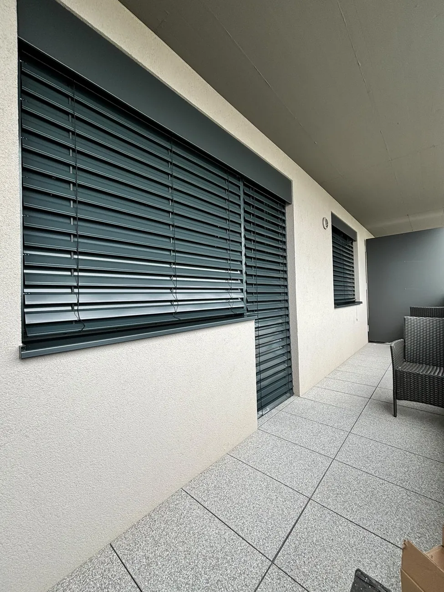
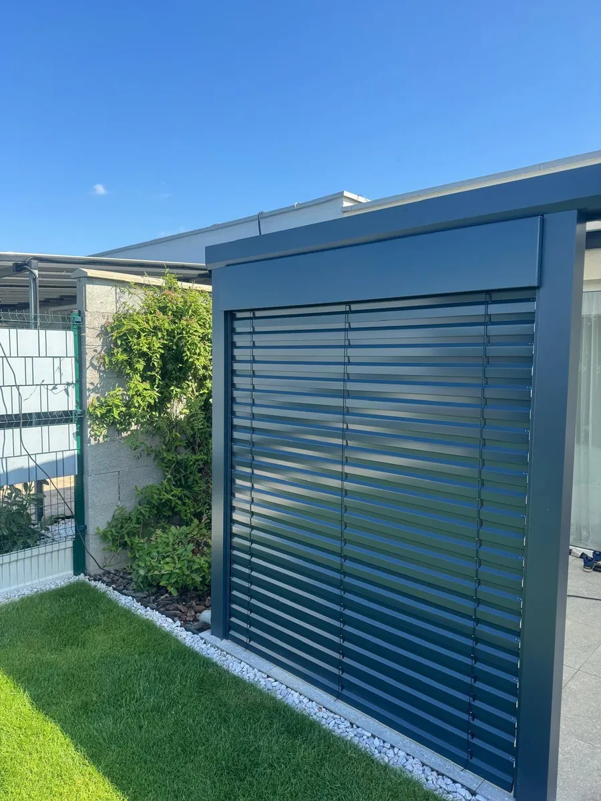
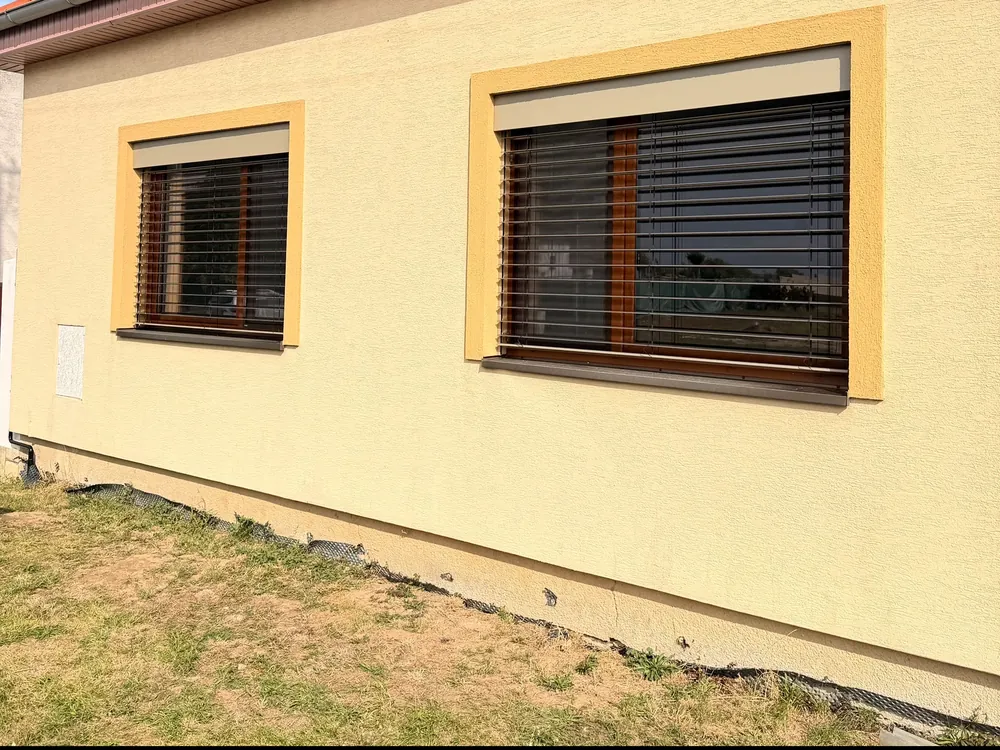
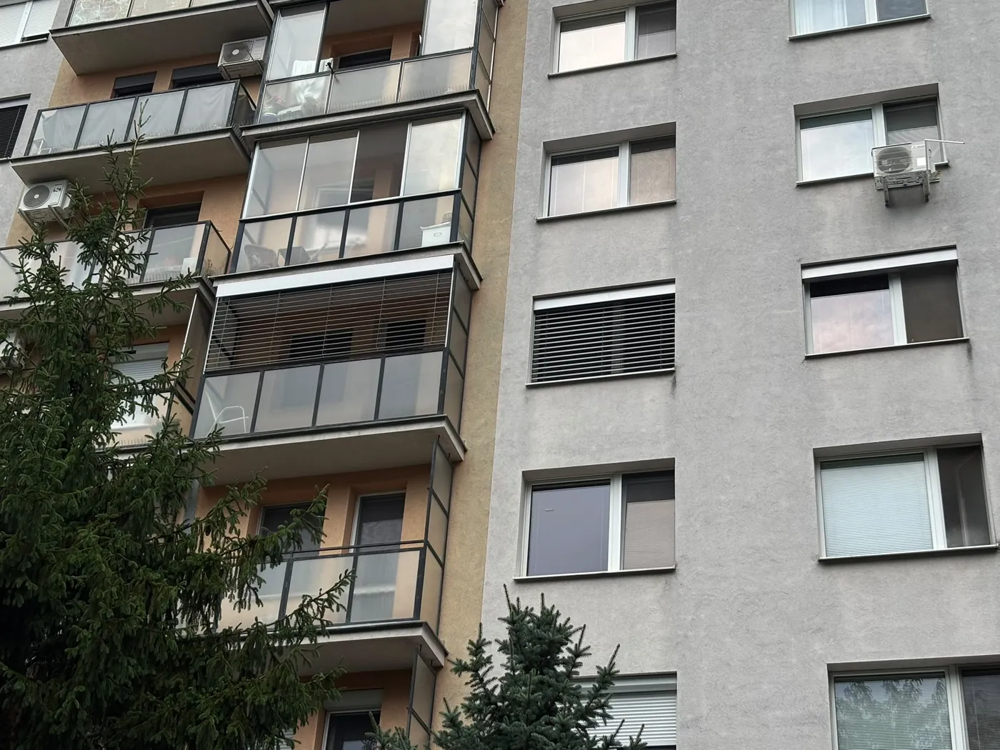
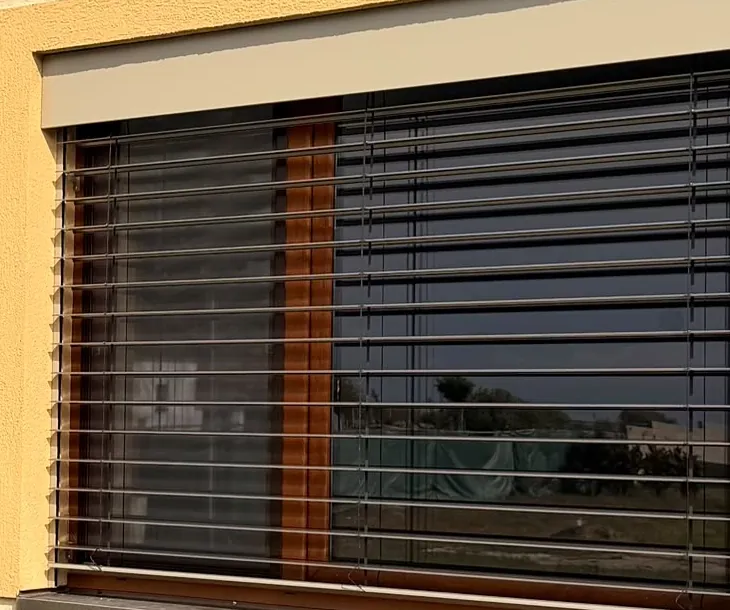
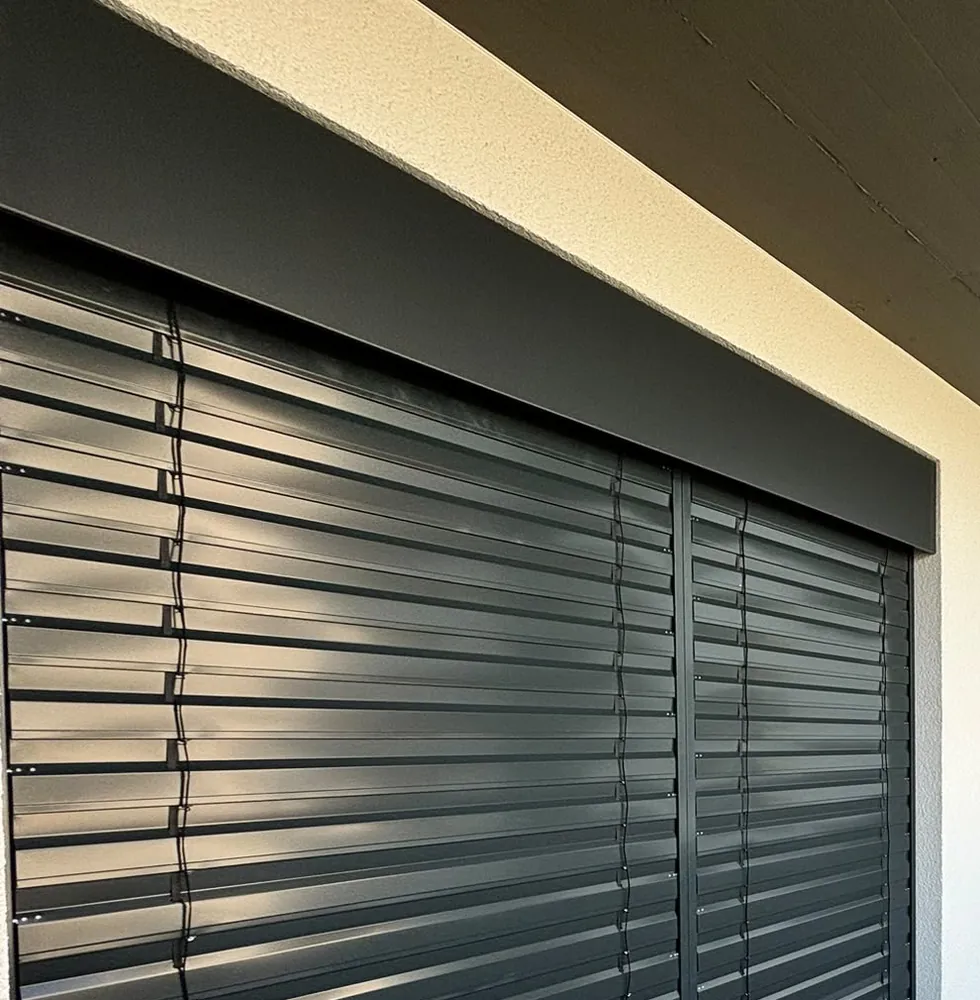
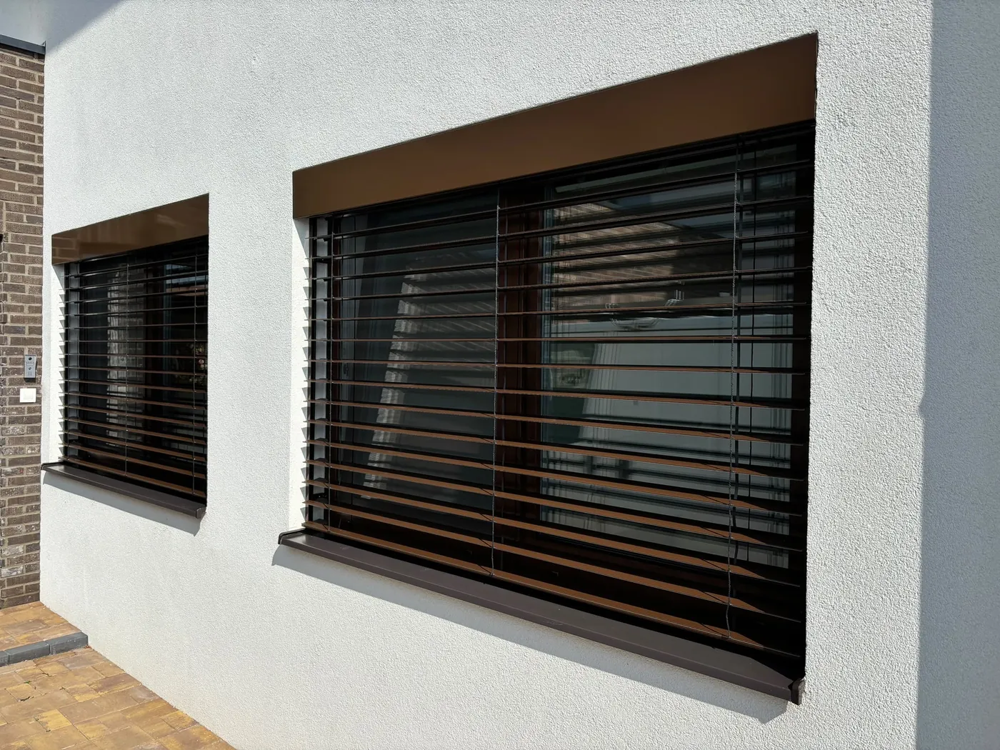
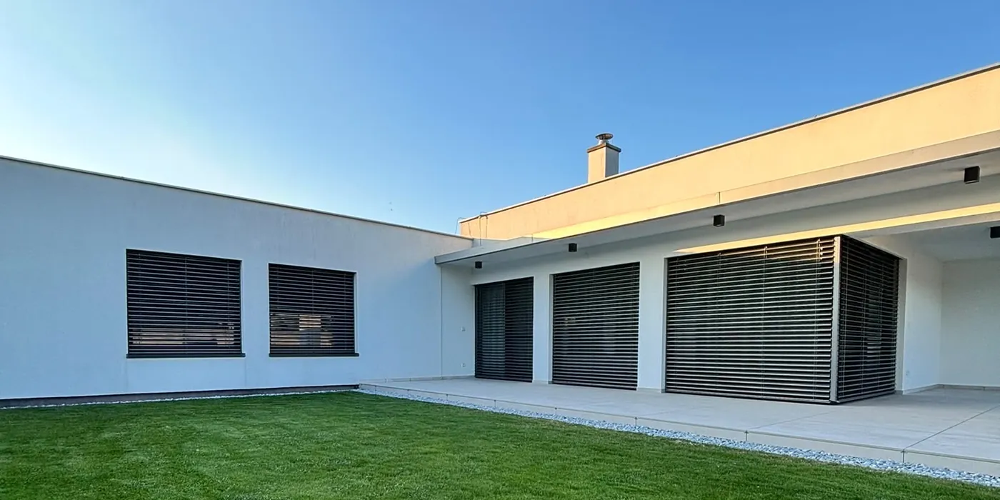
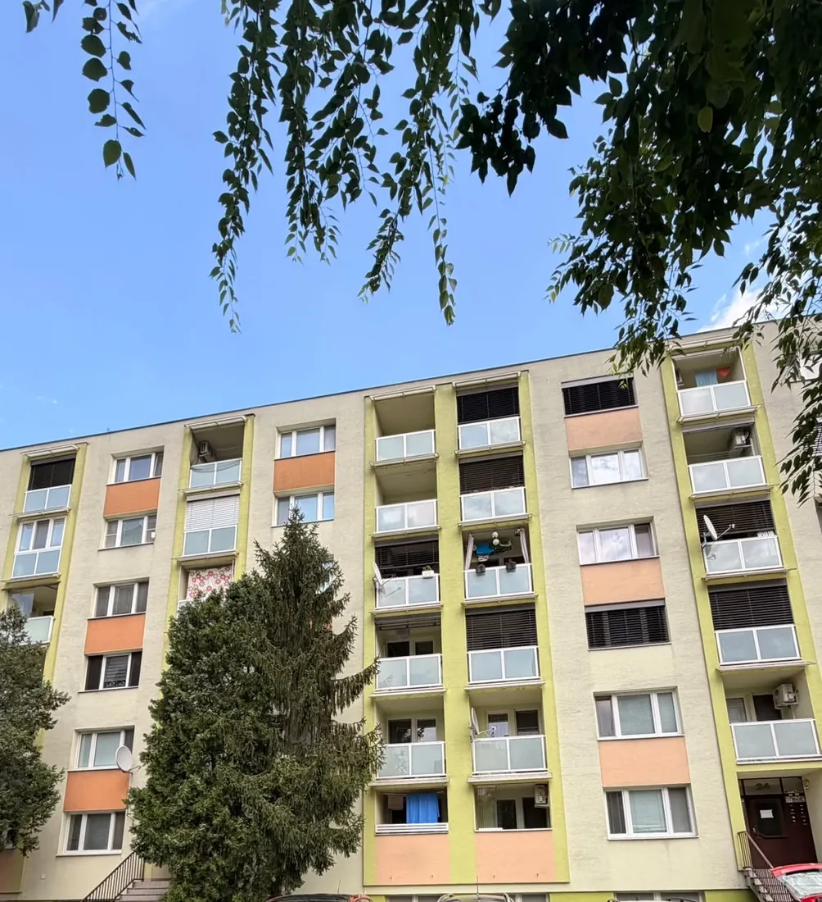

Tieň, ktorý pracuje za vás.
Vonkajšie žalúzie na mieru so skrytým boxom pod omietkou a motorom Somfy. V lete chladnejší dom, večer súkromie, všetko jedným stlačením ovládača.
Terasa, ktorá sa prispôsobí počasiu.
Hliníková pergola s pevnou strechou alebo s otočnými lamelami. Doplníte ju LED osvetlením, bočnými screenmi aj posuvným zasklením.
Výhľad zostáva. Horúčava nie.
Technická tkanina zastaví väčšinu slnečného tepla ešte pred sklom, a pritom z domu stále vidíte von. Vedenie ZIP drží látku napnutú aj vo vetre.
Chládok aj v byte na siedmom poschodí.
Vonkajšie žalúzie a rolety montujeme aj na panelové a bytové domy. Poradíme s povolením od správcu aj s výberom farby k fasáde.
Kompletné riešenia tienenia – pergoly, žalúzie, rolety, siete, zimné záhrady a zasklenia.
Všetko vyrábame a montujeme presne na mieru, s dôrazom na kvalitu, dizajn a dlhú životnosť.
Tienenie pre dom,
terasu aj interiér
Vyberte si, čo vás zaujíma. Pri každom produkte nájdete typy, možnosti ovládania a to, na čo sa zákazníci pýtajú najčastejšie. Presnú cenu pripravíme po bezplatnom zameraní.
 Najžiadanejšie
NajžiadanejšieVonkajšie žalúzie
Najúčinnejšia ochrana pred prehrievaním. Lamelami regulujete svetlo aj súkromie.
- podomietkové
- C-80 · Z-90
- Somfy

Screenové rolety
Technická tkanina v bočnom ZIP vedení. Tieni, chráni pred hmyzom a nechá vám výhľad.
- ZIP
- odolné vetru
- veľké plochy

Vonkajšie rolety
Plastové alebo hliníkové s PUR penou. Úplné zatemnenie, tepelná izolácia aj bezpečnosť.
- plastové
- hliníkové
- predokenný box

Hliníkové pergoly
S pevnou strechou alebo bioklimatické s otočnými lamelami. Doplníte LED, screeny aj zasklenie.
- hliník
- pevná strecha
- otočné lamely

Vnútorné tienenie
Horizontálne žalúzie, látkové rolety, deň a noc, plisé a vertikálne žalúzie.
- žalúzie
- rolety
- plisé

Servis okien
Okná, ktoré sa zle zatvárajú, fúka cez ne alebo drhnú? Nastavíme, premažeme, vymeníme. Na našu montáž 5 rokov servis zdarma.
- kovanie
- tesnenia
- kľučky
Chránia dom pred teplom ešte predtým, než sa dostane k sklu
Vonkajšie žalúzie zachytia slnko pred oknom, preto sú v lete najúčinnejším tienením. Natočením lamiel si sami určíte, koľko svetla pustíte dnu. Vyskúšajte si to na ovládači vľavo.
C-80 zaoblená
Klasika s dobrým pomerom ceny a výkonu. Lamely sa dajú plynule natáčať.
Z-90 s tesnením
Lamely do seba zapadnú a gumové tesnenie ich utlmí. Najlepšie zatemnenie aj najtichší chod.
S-90 esovitá
Moderný tvar pre architektúru s rovnými líniami. Dobre zatieni a pri zatiahnutí vyzerá elegantne.
F-80 plochá
Rovná, minimalistická lamela pre moderné domy. Vo vytiahnutom stave zaberie málo miesta.
Predokenný box
Box je namontovaný na fasáde nad oknom a je viditeľný. Najjednoduchšie riešenie, keď sa fasáda už nebude zatepľovať.
Podomietkový box
Box je skrytý v zateplení pod omietkou, na fasáde ostane len úzka štrbina. Ideálne pri novostavbe alebo pri zatepľovaní.
Box v nadokennom preklade
Žalúzia sa ukryje v špeciálnom preklade nad oknom už pri stavbe. Treba s ňou rátať v projekte. Radi to prekonzultujeme s vaším projektantom.
Kľuka
Ručné ovládanie bez elektriny. Vhodné na menšie okná a vedľajšie miestnosti.
Motor + vypínač
Tichý motor Somfy a nástenný vypínač pri okne. Jednoduché a spoľahlivé.
Diaľkový ovládač
Jeden alebo viac kanálov, skupiny okien, obľúbená poloha lamiel na jedno stlačenie.
Senzory a skupiny
Senzor vetra Somfy žalúzie pri silnom vetre sám vytiahne. Jedným tlačidlom ovládate celé poschodie.
Veľké okná bez prehrievania, výhľad zostáva
Screenová roleta je technická tkanina navíjaná do boxu nad oknom. Tieni ako žalúzia, ale pôsobí jemne a nenápadne. Obľúbená je hlavne na veľkých presklených stenách a posuvných dverách.
ZIP screen: okraje látky sú zasunuté v bočných lištách, takže látka je stále napnutá, odolá vetru a nepustí dnu hmyz.
Hranatý k moderným fasádam, zaoblený ku klasickým, alebo podomietkový ukrytý v zateplení.
Motor Somfy s ovládačom alebo vypínačom. Ak nie je poruke elektrina, dá sa použiť aj solárny pohon.
Priehľadné (výhľad von zostáva) alebo zatemňovacie (blackout). Vzorkovník vám prinesieme na zameranie.
Vonkajšia obývačka,
ktorá funguje za každého počasia
Pergolu s pevnou strechou postavíme k domu aj samostatne. Bioklimatická verzia má otočné lamely: otvoríte ich a necháte dnu slnko aj vzduch, alebo ich zatvoríte a máte strechu.

Čo pergola dokáže
Animácia vľavo ukazuje bioklimatickú pergolu s otočnými lamelami.
Otočné lamely
Motorom plynule natáčate hliníkové lamely, od plného slnka až po úplne zatvorenú strechu.
Senzor dažďa
Keď začne pršať, lamely sa samy zatvoria. Nemusíte pritom byť doma.
LED osvetlenie
Stmievateľné LED pásy v ráme. Večer na terase vytvoria príjemnú atmosféru.
Bočné ZIP screeny
Po stranách chránia pred vetrom, nízkym slnkom aj pohľadmi susedov.
Odvod vody
Voda zo žľabov odteká cez stĺpy, preto na terase nič nekvapká.
Na mieru
Samostatne stojaca alebo pripojená k domu. Rozmer a farbu RAL prispôsobíme.
Posuvné sklá sa zasunú za seba a terasa je zase otvorená.
Terasa, ktorú využijete aj v októbri
Hliníkové posuvné zasklenie uzavrie pergolu, terasu alebo balkón pred vetrom, dažďom a prachom. Keď je teplo, sklá posuniete nabok a priestor je opäť otvorený.
Posuvné sklenené steny pod pergolu alebo prístrešok. Hliníkové profily vo farbe pergoly.
Zasklenie balkónov na rodinných aj bytových domoch, s bezpečnostným sklom.
Hliníková konštrukcia so zasklením, ktorá rozšíri obývačku o svetlú miestnosť.
Tma na spanie, ticho a pocit bezpečia
Rolety úplne zatemnia miestnosť, stlmia hluk z ulice a v zime pomáhajú udržať teplo. Vyberte si podľa rozpočtu a veľkosti okna.
Plastové
- Cena
- priaznivejšia
- Vhodné pre
- menšie a stredné okná
- Izolácia
- dobrá
- Ovládanie
- popruh, kľuka, motor
Hliníkové
- Cena
- vyššia
- Vhodné pre
- aj veľké okná a dvere
- Izolácia
- veľmi dobrá
- Bezpečnosť
- pevnejšie, odolnejšie
Box môže byť predokenný, podomietkový alebo nadokenný. Pri výmene okien sa dá roleta objednať rovno s oknom.
Posledný detail, ktorý dotvorí interiér
Tam, kde nepotrebujete vonkajšie tienenie, alebo ako doplnok k nemu. Pomôžeme vybrať farby a materiály a všetko presne zameriame.
Horizontálne žalúzie
Hliníkové alebo drevené, s plynulou reguláciou svetla.
Látkové rolety
Veľký výber látok, od jemne priesvitných po zatemňovacie.
Deň a noc
Dvojitá látka s pruhmi. Posunutím prepínate medzi svetlom a súkromím.
Plisé
Skladaná látka aj na atypické a strešné okná.
Vertikálne žalúzie
Praktické na veľké okná v kanceláriách a obývačkách.
Skúste ovládač. Tlačidlo my vráti žalúziu do obľúbenej polohy.
Dávame motory, ktoré vydržia roky
Do žalúzií, roliet, screenov aj pergol montujeme pohony Somfy. Je to francúzsky výrobca pohonov pre tienenie, ktorý ich vyrába od roku 1969. Radšej použijeme kvalitný motor, než aby sme sa k vám vracali opravovať lacný.
Tichý a presný chod
Motor sa zastaví presne v nastavenej hornej aj dolnej polohe. Nič nenarazí, nič sa neprekrúti.
Ovládač alebo vypínač
Nástenný vypínač pri okne alebo diaľkový ovládač pre jedno okno, miestnosť či celý dom.
Senzor vetra a slnka
Pri silnom vetre sa žalúzie a screeny samy vytiahnu. Senzor sa dá doplniť aj neskôr.

Okná, ktoré opäť tesnia a ľahko sa zatvárajú
Aj kvalitné okno potrebuje po rokoch údržbu. Prídeme, skontrolujeme ho a opravíme na mieste. Väčšinou bez výmeny celého okna.
Servis zdarma na našu montáž
Na všetko, čo u vás namontujeme, máte 5 rokov servis zdarma. Nastavenie, kontrolu aj drobné opravy vybavíme bez poplatku za výjazd a prácu.
Od prvého telefonátu po hotovú montáž
Celý proces máme pod kontrolou od zamerania až po servis. Vždy viete, čo bude nasledovať a kedy.
Konzultácia
Zavoláte alebo vyplníte formulár. Prejdeme si, čo potrebujete.
Zameranie
Prídeme k vám, všetko presne zmeriame a ukážeme vzorky. Zdarma.
Cenová ponuka
Dostanete prehľadnú ponuku bez skrytých položiek.
Výroba a montáž
Výroba na mieru, montáž našimi technikmi, upratané po sebe.
Zaškolenie a servis
Ukážeme vám ovládanie. Na našu montáž máte 5 rokov servis zdarma.
Inšpirácia z našich montáží
Fotky a videá z našich montáží na rodinných aj bytových domoch. Po kliknutí sa fotka zväčší.










Na čo sa nás pýtate najčastejšie
Nenašli ste odpoveď? Zavolajte nám, radi poradíme.
Dajú sa vonkajšie žalúzie namontovať aj do hotového domu?
Áno. Na hotovú fasádu sa montuje predokenný box. Ak plánujete zatepľovanie, je to ideálny čas na podomietkový box, ktorý ostane skrytý.
Aký je rozdiel medzi žalúziou a screenovou roletou?
Žalúzia má natáčacie lamely, takže presne regulujete svetlo a dá sa takmer úplne zatemniť. Screen je tkanina: tieni rovnomerne, pôsobí jemnejšie a zachová výhľad von. Hodí sa hlavne na veľké presklenia.
Čo sa stane pri silnom vetre?
So senzorom vetra Somfy sa žalúzie a screeny pri nárazovom vetre automaticky vytiahnu do boxu, aj keď nie ste doma. ZIP screeny sú vďaka bočnému vedeniu odolnejšie ako bežné rolety.
Prečo montujete motory Somfy?
Lebo vydržia. Somfy vyrába pohony pre tienenie od roku 1969, motory sú tiché a presne sa zastavia v nastavenej polohe. Lacnejší motor ušetrí pár eur pri kúpe, no často sa pokazí skôr. Radšej dodáme vec, s ktorou budete mať pokoj.
Čo znamená 5 rokov servis zdarma?
Na všetko, čo u vás namontujeme, máte 5 rokov servis zdarma: kontrolu, nastavenie aj drobné opravy bez poplatku za výjazd a prácu. Materiál pri poškodení (napr. po búrke) sa účtuje zvlášť.
Robíte servis aj na oknách, ktoré ste nemontovali?
Áno, servis robíme na bežných plastových, drevených aj hliníkových oknách. Pri objednávke nám stačí povedať, aký problém s oknom máte.
Ako dlho trvá dodanie?
Záleží od produktu a sezóny. Presný termín vám povieme pri cenovej ponuke a potom ho dodržíme.
Povedzte nám, čo potrebujete. Zvyšok vyriešime my.
Vyplňte krátky formulár. Ozveme sa vám, dohodneme termín bezplatného zamerania a pripravíme cenovú ponuku na mieru.